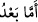

acıdığımdan daha fazla acıyan Allah kullarını nasıl ateşe atabiliyor?” diye sordu. Râvi
diyor ki: “Bunun üzerine Hz. Peygamber ağlamağa başladı ve bana böyle
vahyediliyor.”[10] buyurdu.
“Ve” bu hikmeti anlışılabilir bir tarzda açıklaması için “güzel konuşma vermiştik”.
Bu ifâde, Molla Câmî’nin Şerhu’l-Fusûs’unda da aynı şekilde açıklanıyor ki buna
göre (
) ifâdesi, (
) mânâsınadır; yâni, temyiz edip açıklayan hitap
veya (
) anlamındadır; yâni anlatmak istediği şeyi muhatabına hiçbir
karışıklığa mahal vermeden anlatan vecîz ifâde demektir.
Şerhu’l-Cendî’de (
)’ın mânâsı, işin gerçeğini açıkça ortaya koymak; kazâ
ve hükümleri hiçbir şüphe ve karmaşaya yer bırakmadan kat’î olarak hemen verebilmek
şeklindedir. Ama bu takdirde ifâde, (
), yâni hakkı batıldan ayırt ederek
mahkemeleşmeye son vermek anlamına gelir ve “fasl (
)” lafzı, gerçek anlamında
olurken, “hitâb (
)” kelimesiyle de “mahkemeleşme” anlamı kasdedilmiş olur.
Çünkü mahkemeleşmelerde mutlaka “hitâb” da yer alır.
et-Te’vîlâtü’n-Necmiyye’ye göre ise mânâ şöyledir: “Biz Dâvûd’u en güçlü hükümdar
kılmak sûretiyle, onun zâhirî hükümranlığını kuvvetlendirmiş, kendisine hikmet ve güzel
konuşma özelliği vermek sûretiyle de bâtınî hükümranlığını güçlendirmiştik. Hikmet;
ilâhî hibeye dayalı türlü türlü ma’rifetlerdir. (
) ise, bu ma’rifetleri en
doyurucu, iknâ edici delillerle ve çok az sözle açıklamaktır.
“İmdi” mânâsına gelen (
) ifâdesinin (
) diye adlandırılması, bu
kelimenin anlatmak istenen esas şeyi, bu şeye hazırlık için zikredilen hamd ve salât ü
selâmdan ayırması (fasl) hasebiyledir.
Ziyâd, konuşması esnâsında (
) olan (
) ifâdesini ilk kullanan zâtın
Dâvûd (a.s.) olduğunu söyler. Ancak Dâvûd’un hiçbir zaman kendi dili dışındaki bir
dille konuştuğu sübût bulmamıştır; (
) da Arapça bir lafızdır; ayrıca İnsânü’l-
uyûn’da belirtildiği gibi, Dâvûd’a verilen (
), (
) yâni çekişme ve
husûmetlere son vermek anlamındadır” denilerek reddedilmiştir.
Ziyâd’ın mezkûr görüşü, -tabii bunu gerçekten söylediyse- ancak şu şekilde
doğrulanabilir: Dâvûd (
) ifâdesini, aynen bu şekilde Arapça olarak değil, bilâkis
(imdi gibi,) kendi dilindeki karşılığını kullanan ilk kişi olabilir.
Ali (r.a.) der ki: (
): Şikâyetçiden delil istemek, şikayeti reddedene ise
yemin etme mecburiyeti getirmektir. Çünkü aralarında çekişme bulunan kişilerin sözleri,
ancak bu metodla temyiz edilip sona erdirilebilir.
Bazı âlimler derler ki: Daha önceleri Allah Teâlâ, gökten bir zincir sarkıtır ve
Dâvûd’a insanlar arasında bununla hükmetmesini emredermiş: Haklı olanlar, elleri bu
zincire ererek zinciri tutabilir, haksız olanlar ise tutamazmış. Bir keresinde adamın biri